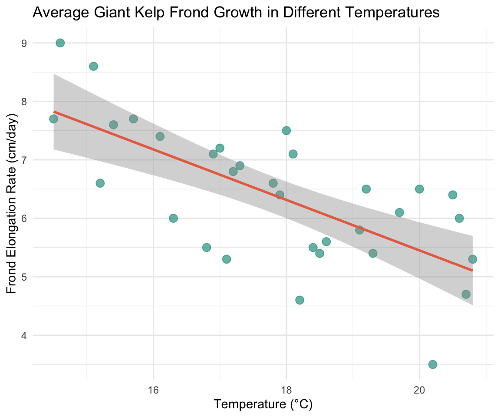
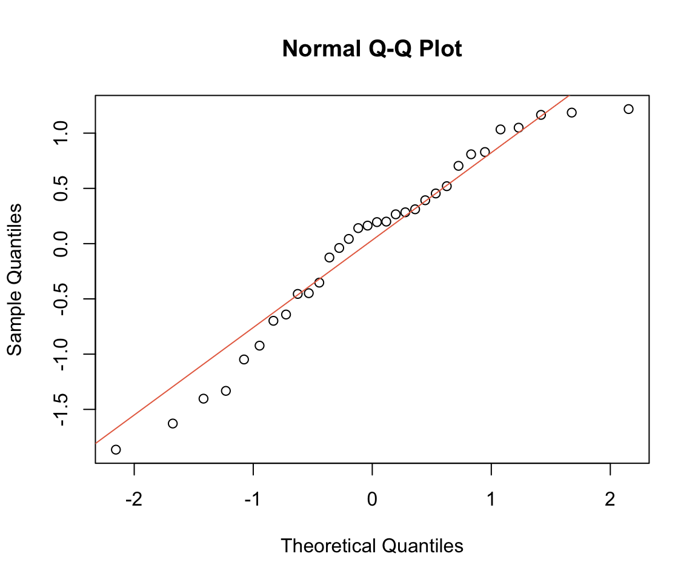
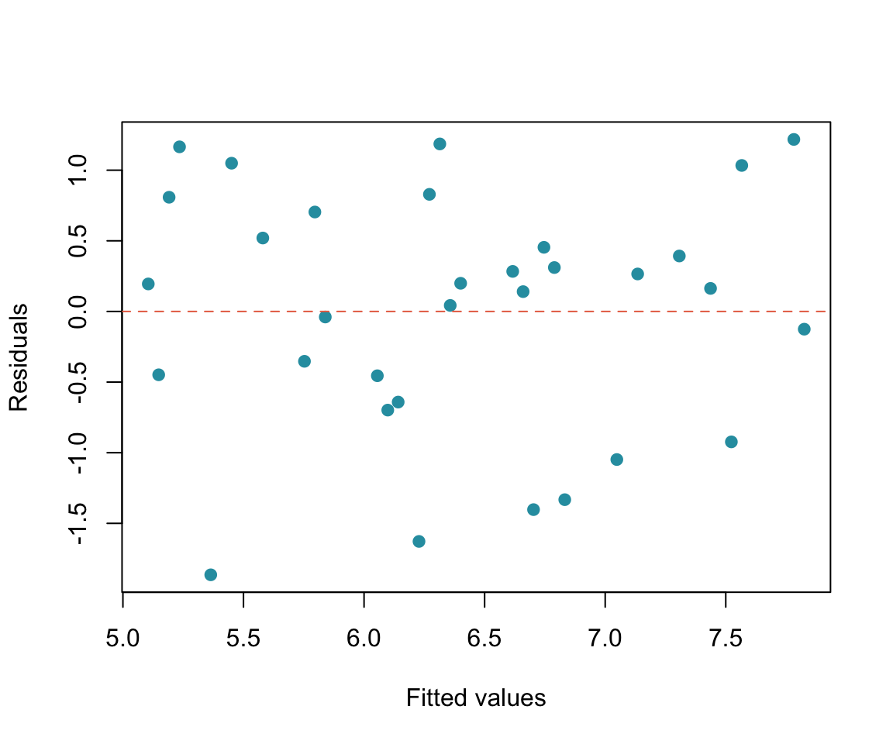
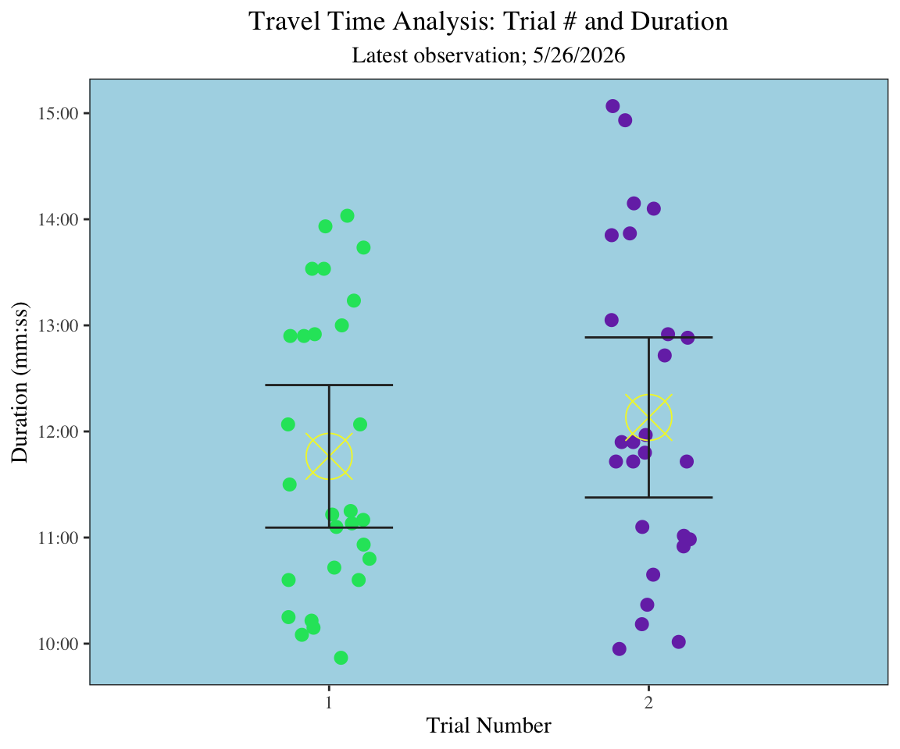
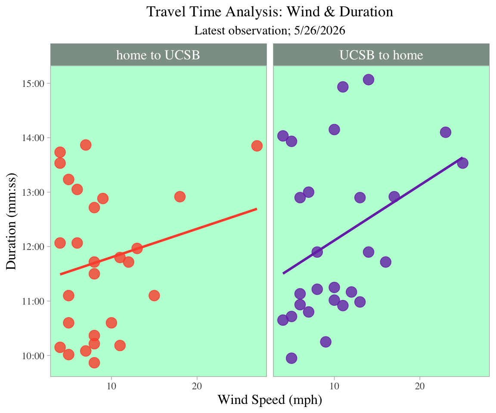

# attaching packages
library(tidyverse)
library(janitor)
library(here)
library(effectsize)
library(readxl)
library (ggeffects)
library(rstatix)
# reading in kelp data
kelp <- read.csv(
here("data", "temp_kelp.csv"))
# reading in personal data
my_data <- read.csv(
here("data","personal_data.csv"))Homework 3 - 193DS Spring
Problem 1. Giant Kelp Fronds
a. An appropraite test
To start off, in order to measure the strength and direction of the relationship between kelp length and temperature I will use Pearson’s Correlation Coefficient. Another good test to add could be the simple linear regression test as it can clarify if a true linear relationship exists between the two variables. In order to visualize and model the relationship, I will use a simple linear regression model. The Pearson’s Correlation Coefficient provides a numerical value to describe the relationship between the two variables and the simple linear regression models this relationship with a line.
b. Create a visualization
# base layer: ggplot
ggplot(data = kelp,
# x-axis: temperature
# y-axis: kelp elongation rate (cm/day)
mapping = aes(x = temp_c,
y = kelp_elong)) +
# first layer: adding data points
geom_point(color = "#2a9d8f",
alpha = 0.7,
size = 3) +
# second layer: adding trend line with color and standard error
geom_smooth(method = "lm",
color = "#e76f51",
se = TRUE) +
# labeling x- and y-axis
labs(
x = "Temperature (°C)",
y = "Frond Elongation Rate (cm/day)",
title = "Average Giant Kelp Frond Growth in Different Temperatures") +
# adding different theme from default
theme_minimal()
c. Checking assumptions and running tests
1. Checking assumptions
# Fit the model first to extract residuals
kelp_model <- lm(
kelp_elong ~ temp_c,
data = kelp)
# Check normality of residuals: Q-Q plot
qqnorm(residuals(kelp_model))
qqline(residuals(kelp_model),
col = "#e76f51")
# Check homoscedasticity: residuals vs fitted values
plot(fitted(kelp_model),
residuals(kelp_model),
xlab = "Fitted values",
ylab = "Residuals",
pch = 19,
col = "#2a9daf")
abline(h = 0,
col = "#e76f51",
lty = 2)
2. Running tests
# Pearson's correlation coefficient test ----
cor.test(kelp$temp_c,
kelp$kelp_elong,
method = "pearson")
Pearson's product-moment correlation
data: kelp$temp_c and kelp$kelp_elong
t = -5.189, df = 30, p-value = 1.366e-05
alternative hypothesis: true correlation is not equal to 0
95 percent confidence interval:
-0.8359665 -0.4460157
sample estimates:
cor
-0.6877489 Linearity was assessed visually using a scatterplot of temperature vs. elongation rate with a fitted regression line. Normality of residuals was checked using a Q-Q plot and homoscedasticity was assessed using a residuals vs. fitted values plot. The scatterplot (in part b) suggests a reasonably linear relationship, the Q-Q plot shows residuals falling close to the reference line, and the residuals vs. fitted plot shows no obvious trend. All assumptions appear reasonably satisfied.
d. Results communication
To evaluate the strength of the relationship between temperature and giant kelp frond elongation rate I used a Pearson’s correlation coefficient. This tests was an appropriate choice because both variables are continuous and the scatterplot suggested a linear relationship between them.
Temperature was a significant negative predictor of giant kelp frond elongation rate (r = -0.69, p < 0.001 , R² = 0.473). As seawater temperature increased, kelp fronds grew more slowly, suggesting that warmer water conditions are affect Macrocystis pyrifera and inhibit its growth. This pattern is consistent with what we know about kelp ecology, giant kelp thrives in cold, nutrient-rich water, and elevated temperatures likely symbolize conditions such as reduced upwelling that limit the nutrients available for growth.
e. Test implications
Our analysis found a strong negative relationship between seawater temperature and giant kelp frond elongation rate, meaning kelp grows significantly slower as water temperatures rise. This is very concerning given ongoing ocean warming trends. If temperatures continue to increase, we should expect noticeable declines in kelp growth rates, which could have cascading effects on the broader kelp forest ecosystem. I’d recommend to prioritize monitoring sites where temperatures are already at the higher end of the range we observed, as those are likely the most at-risk locations for growth suppression.
f. Double check my own work
# Simple linear regression ----
summary(kelp_model)
Call:
lm(formula = kelp_elong ~ temp_c, data = kelp)
Residuals:
Min 1Q Median 3Q Max
-1.8643 -0.5017 0.1790 0.5659 1.2177
Coefficients:
Estimate Std. Error t value Pr(>|t|)
(Intercept) 14.08645 1.49219 9.440 1.72e-10 ***
temp_c -0.43179 0.08321 -5.189 1.37e-05 ***
---
Signif. codes: 0 '***' 0.001 '**' 0.01 '*' 0.05 '.' 0.1 ' ' 1
Residual standard error: 0.8665 on 30 degrees of freedom
Multiple R-squared: 0.473, Adjusted R-squared: 0.4554
F-statistic: 26.93 on 1 and 30 DF, p-value: 1.366e-05Both Pearson’s correlation and simple linear regression led to the same decision to reject the null hypothesis, confirming that temperature is a significant predictor of giant kelp frond elongation rate. Pearson’s correlation quantified the strength and direction of the linear relationship between temperature (°C) and elongation rate (cm/day) through the r value, while linear regression provided the slope and R² to describe how much of the variation in elongation rate is explained by temperature. Both tests agree that as temperature increases, elongation rate decreases, and together they reinforce the same biological conclusion — just from slightly different analytical angles, with correlation focused on association strength and regression focused on the nature and predictive power of the relationship.
Problem 2. Personal data
a. Updating visualizations
# creating new object called my_data_clean
my_data_clean <- my_data |>
# cleaning column names so only lowercase and underscores are used
clean_names() |>
mutate(duration_sec = as.numeric(ms(duration_mm_ss)))# define mm:ss label format
mmss_format <- function(x) sprintf("%d:%02d", x %/% 60, x %% 60)
# base layer: gpplot
ggplot(data = my_data_clean,
# x-axis: trial number
# y-axis: duration
mapping = aes(x = factor(trial_number),
y = duration_sec,
color = factor(trial_number))) +
# first-layer: jitter horizontally to organize visualization
geom_jitter(width = 0.13,
height = 0,
size = 2.5) +
# mean points on graph
stat_summary(fun = mean, # calculate average
geom = "point", # display as point
color = "#f2f533", # change color of point
shape = 13, # change shape of point
size = 10) +
# standard deviation error bars
stat_summary(fun.data = mean_sdl, , # calculate standard deviation
fun.args = list(mult = 0.5), # tighter view of variability
geom = "errorbar", # adding error-bar
width = 0.4, # changing width
color = "#2b2b2b") + # changing color
# assigning colors to trial 1 and trial 2
scale_color_manual(values = c("1" = "#19e36a",
"2" = "#7836b5")) +
# assigning a new and organized scale for y-axis
scale_y_continuous(
breaks = seq(600, max(my_data_clean$duration_sec, na.rm = TRUE), by = 60),
minor_breaks = seq(600, max(my_data_clean$duration_sec, na.rm = TRUE), by = 30),
labels = mmss_format
) +
# adjusting plot (decreasing space in between categories and plot borders)
scale_x_discrete(expand = expansion(add = 0.7, mult = 0.05)) +
# changing theme from default
theme_bw(base_family = "serif") +
# changing panel and plot background
theme(
panel.background = element_rect(fill = "lightblue"),
plot.background = element_rect(fill = "transparent", color = NA)
) +
# taking out the minor grid
theme(panel.grid.minor = element_blank()) +
# taking out major grid
theme(panel.grid.major = element_blank()) +
# taking out legend
theme(legend.position = "none") +
# adjusting title position
theme(plot.title = element_text(hjust = 0.5)) +
# adjusting subtitle position
theme(plot.subtitle = element_text(hjust = 0.5)) +
# adding title and labeling to x- and y-axis
labs(x = "Trial Number",
y = "Duration (mm:ss)",
title = "Travel Time Analysis: Trial # and Duration",
subtitle = "Latest observation; 5/26/2026")
# base layer ggplot
ggplot(data = my_data_clean,
# x-axis = wind speed
# # y-axis = direction of trip
# # color varies by direction of trip
aes(x = wind_speed_mph,
y = duration_sec,
color = direction_of_trip)) +
# adding points
geom_point(size = 4, alpha = 0.8) +
# adding a regression line for both plots
geom_smooth(method = "lm", se = FALSE) +
# splitting into two graphs (one per category)
facet_wrap(~ direction_of_trip) +
# assigning a new and organized scale for the y-axis
scale_y_continuous(
breaks = seq(600, max(my_data_clean$duration_sec, na.rm = TRUE), by = 60),
minor_breaks = seq(600, max(my_data_clean$duration_sec,
na.rm = TRUE), by = 30),
labels = mmss_format
) +
# assigning colors for each categories
scale_color_manual(values = c("home to UCSB" = "#fc5538",
"UCSB to home" = "#7836b5")) +
# changing theme from default
theme_light(base_family = "serif") +
# changing panel and plot background
theme(
panel.background = element_rect(fill = "#bdffd7"),
plot.background = element_rect(fill = "transparent", color = NA)
) +
# labeling x- and y-axis and adding title
labs(title = "Travel Time Analysis: Wind & Duration",
subtitle = "Latest observation; 5/26/2026",
x = "Wind Speed (mph)",
y = "Duration (mm:ss)") +
# taking out the minor grid
theme(panel.grid.minor = element_blank()) +
# taking out major grid
theme(panel.grid.major = element_blank()) +
# taking out legend
theme(legend.position = "none") +
# adjusting title position
theme(plot.title = element_text(hjust = 0.5)) +
# adjusting subtitle position
theme(plot.subtitle = element_text(hjust = 0.5)) +
# adjusting facet_wrap text and color
theme(
strip.text = element_text(size = 12, color = "white"),
strip.background = element_rect(fill = "#8e9e95")) +
# adjusting x- and y-axis text
theme(axis.title = element_text(size = 12))
b. Captions
Figure 1. Scatter plot with mean travel duration for trial number 1 and 2 and error bars displaying $$0.5 standard deviations around the mean. Individual observation points in each trial are denoted by x-axis (1,2) as well as colors (trial 1: green, trial 2: purple). Trial number averages are denoted by the yellow circles with X’s going through. Error bars display the 95% confidence interval around each regional mean. Data source: Michael Torbensen. 2026. Average bike duration spreadsheet.
Figure 2. Two separate panels for travel direction show scatter plots with a regression line modeling the average relationship between duration (y-axis) and wind speed (x-axis). The first panel (home to UCSB) features red points indicating individual observations as well as a red regression line. The second panel (UCSB to home) features purple points indicating observations as well as a purple regression line. Data source: Michael Torbensen. 2026. Average bike duration spreadsheet.
Problem 3. Affective visualization
Problem 4. Statistical critique
a. Revisit and summarize
In this paper, the author is wondering how effective re-connected floodplains are at de-nitrifying bodies of water that are useful to humans and other biological communities. Out of the tests conducted, analysis of variance (ANOVA) is the main test that the author used.

b. Visual Clarity
The table clearly shows the results of the ANOVA tests by including the key statistical components needed for interpretation: degrees of freedom, F-statistic, and p-value. The inclusion of N (sample size), mean, and SE (standard error) alongside the test statistics is also useful because it gives the reader context for the raw data underlying each comparison, rather than just isolating the test results.
c. Aesthetic clarity
The authors handled visual clutter in a way that made the graph legible but not with outstanding quality. The categories listed in the table are bold so that each separate category cannot be confused with the other. Although, all data have the same font style, size, and type. So, if there is any data that is particularly useful for the validity of the test results, it cannot be deduced by looking at the graph. That being said, the organization by treatment, time period, and site makes it easy to compare across all four ANOVAs.
d. Recommendations
Typically, for an ANOVA test, it’s common to mention the sum of squares (SS) and mean squares (MS) to measure the among-group variation and within-group variation as this is where the F-statistic and effect size come from. This would give more information to the reader and increase clarity and comprehension of the data. Also, since the group sizes are so large, the SE numbers are very small. If the SE column was replaced with SD, the spread of the nitrate measurements in each group would be much more visible and one can judge whether differences between group means are biologically significant.